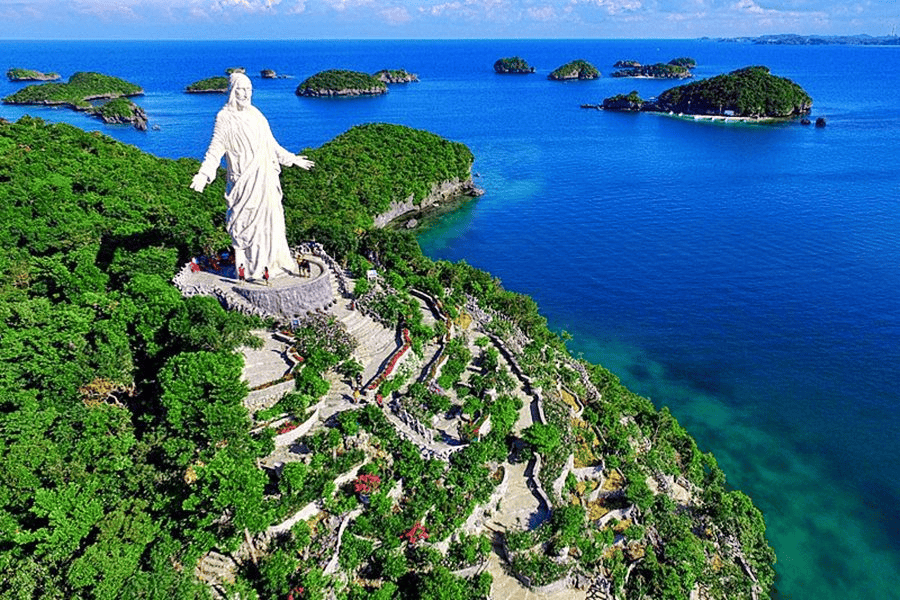
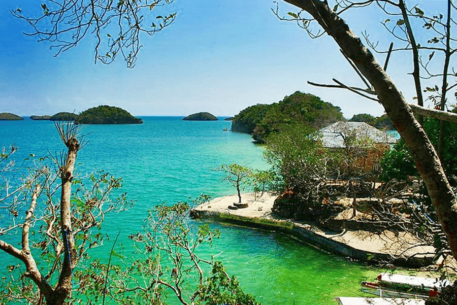
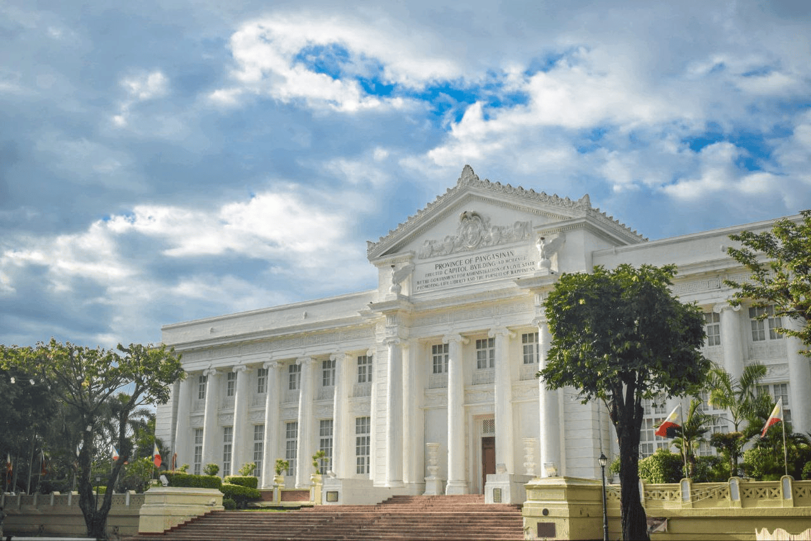
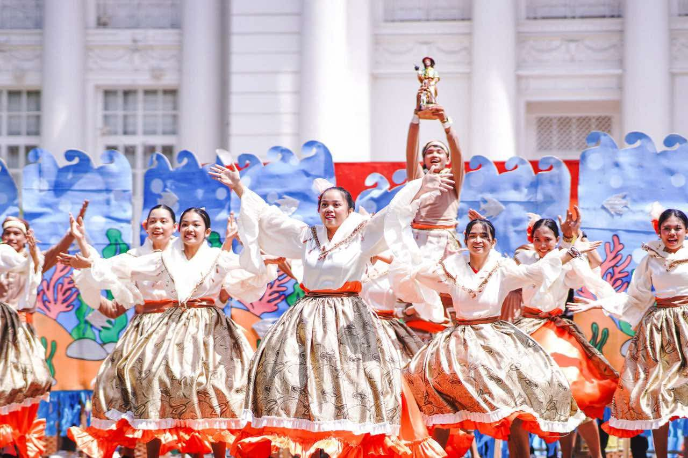
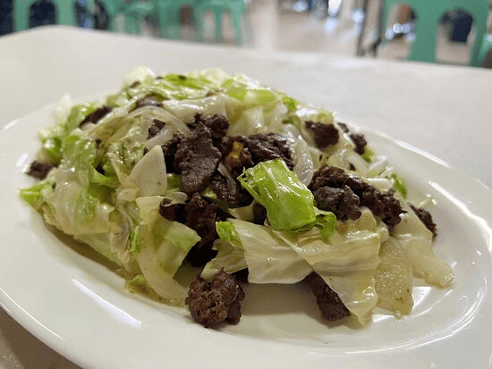

Discover The Beauty Of Pangasinan

Where Islands, Culture, and Faith Meet Located in the western part of Luzon, Pangasinan is a province that blends coastal beauty, spiritual heritage, and local traditions into one unforgettable destination. From pristine beaches and hidden lagoons to mountain viewpoints and pilgrimage towns, it offers a little bit of everything—whether you're seeking adventure, relaxation, or cultural discovery. The name “Pangasinan” comes from the word asin (salt), reflecting its long history as a center of salt production. Today, it is best known as the gateway to the breathtaking Hundred Islands National Park—but beyond that iconic attraction lies a diverse landscape waiting to be explored.
Destinations & Attractions
From serene beaches to scenic viewpoints, Pangasinan’s attractions offer nature, adventure, and relaxation.

- Bolinao White Beach: Soft white sand and a laid-back atmosphere, perfect for swimming and sunset walks.
- Anda Blue Lagoon: A hidden turquoise lagoon ideal for photography and calm waters.
- Lucap Wharf: A lively coastal port that serves as the main gateway for island-hopping adventures to the Hundred Islands.
- Alaminos City View Deck: Panoramic views of the city and the nearby Hundred Islands.
- Minor Basilica of Our Lady of Manaoag: A revered pilgrimage site known for its miraculous image of the Virgin Mary and its deep spiritual significance.
What to expect: Swimming, photography, scenic views, island hopping, and quiet nature escapes.
History & Heritage
Pangasinan’s landmarks tell the story of its colonial past, maritime history, and local traditions.

- Pangasinan Provincial Capitol Building – The heart of local government and a symbol of civic pride.
- St. James the Great Parish Church – Historic church reflecting centuries of faith and architecture.
- Bolinao Lighthouse – A historic maritime landmark guiding travelers and fishermen.
- Lingayen Gulf WWII Memorials – Commemorating the region’s role in World War II.
- Bolinao Heritage Museum – Showcasing artifacts, cultural history, and local heritage.
What to expect: Historical tours, cultural insights, and photo-worthy landmarks.
Culture & Festivals
Experience Pangasinan’s living traditions, music, and local celebrations.

- Bangus Festival – A lively celebration of the province’s famous milkfish.
- Carabao Festival – Showcasing the role of the carabao in agriculture and community life.
- Pangasinense Folk Music – Traditional songs and instruments unique to the region.
- Local Weaving Traditions – Handcrafted textiles preserving centuries-old artistry.
- Salt Harvest Rituals – Cultural practices tied to Pangasinan’s salt-making heritage.
What to expect: Festivals, cultural performances, and hands-on traditional experiences.
Food & Local Products
Pangasinan is a food lover’s paradise, offering flavors that reflect local life and coastal abundance.

- Mangaldan Empanada – Crispy pastry stuffed with savory fillings.
- Bolinao Longganisa – A garlicky sausage famous throughout the province.
- Pangasinan Salt Products – From traditional salt to artisanal varieties.
- Fresh Bangus Delicacies – Fresh milkfish dishes prepared in local styles.
- Pigar-Pigar Street Food – Sizzling street food for adventurous eaters.